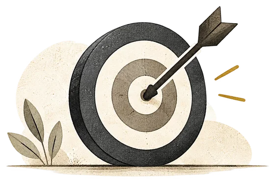
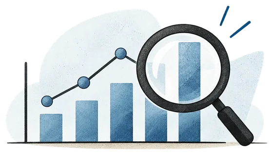
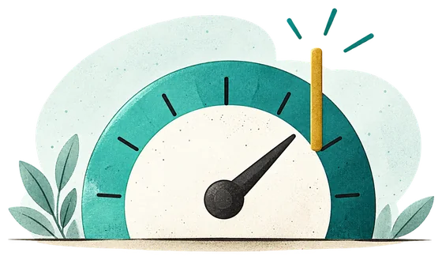
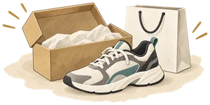
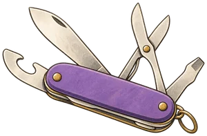
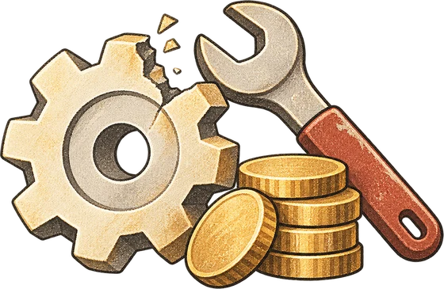

Kritische Succesfactoren & Kritische Prestatie-Indicatoren
Kwaliteit begint bij goede doelen. Maar een doel alleen is niet genoeg: je moet weten wat er op punt moet staan om het te halen, en hoe je meet of dat lukt. Daarvoor gebruik je KSF'en en KPI's.

Bijvoorbeeld: tegen januari 5% meer winst. Specifiek, meetbaar en met een deadline.
Een element dat goed moet werken, anders haal je het doel nooit. Geen getal, maar een factor.

De meting die toont of een KSF werkt. Je kan het opvolgen in de tijd.

De waarde van de KPI waarmee je weet dat je op het goede spoor zit.
Een bedrijf waar de Kritische Succesfactoren ontbreken of ondermaats blijven, zal nooit de bedrijfsdoelen bereiken. Ook niet als het de vele noodzakelijke dagelijkse taken goed doet.
Deel 1Beklim de KSF-ladder
De beste manier om KSF'en en KPI's te begrijpen, is via voorbeelden. Kies een voorbeeld en klik op een KSF. Beklim dan stap voor stap de ladder: van de KSF, naar de KPI, naar de doelwaarde. Klik op de KPI of de doelwaarde om ze te tonen, en nog eens om ze weer te verbergen. Of gebruik de knoppen onder de uitleg. Bij elke stap hoort een zin uit het denkkader van de cursus.
Beide voorbeelden volledig beklommen!
Zie je het patroon? Telkens gebruik je hetzelfde denkkader:
- Om het doel te bereiken is het noodzakelijk ... te hebben. (de KSF)
- De beste aanduiding om te zien of een KSF werkt, is ... (de KPI)
- We weten dat we op het goede spoor zijn indien we ... halen. (de doelwaarde)
Merk ook op: een doelwaarde is niet altijd "zo hoog mogelijk". Bij teruggestuurde maaltijden, garantieclaims en productiekosten is lager beter. Daar is de doelwaarde een maximum.
Deel 2KSF, KPI, doelwaarde of gewone dagtaak?
Test jezelf in drie nieuwe situaties. Lees het doel en beslis bij elke kaart wat het is. Let op: sommige kaarten zijn gewone dagtaken. Die zijn wel noodzakelijk, maar ze bepalen niet of je het doel haalt.

Doel:
Deel 3Stel zelf KSF'en en KPI's op voor Campi
Campi is de campusapp voor PXL-studenten. Een team van vier PXL-Digital studenten bouwt een mobiele app met het persoonlijke lesrooster, campusnieuws, een interactief plattegrond en het dagmenu van PXL Catering. Het team heeft een SMART doel. Help hen de KSF'en, KPI's en doelwaarden op te stellen.
Welke factoren zijn écht kritisch?
Zoek de 4 kritische succesfactoren tussen de kaarten. Opgelet: niet alles wat belangrijk klinkt, is ook een KSF.
Kies per KSF de beste KPI en doelwaarde
Een goede KPI is meetbaar en toont echt of de KSF werkt. Een goede doelwaarde is concreet en haalbaar.
Het resultaat: de KSF-tabel van Campi
Je hebt per factor bepaald wat goed moet werken, hoe je dat meet en welk niveau je nastreeft.
Van voorwaarden naar het Campi-doel
Deze KPI's helpen de vier succesfactoren opvolgen. Controleer daarnaast het doel zelf: gebruikt 60% van alle PXL-studenten de app wekelijks? Installeren is nog niet hetzelfde als blijven gebruiken.
De KPI's bepaal je tijdens de planningsfase. Tijdens de uitvoering en het beheer van het project volg je ze op. En situaties veranderen: komt er bijvoorbeeld een officiële PXL-app met hetzelfde rooster, dan herbekijkt het team zijn KSF'en, KPI's en doelwaarden.
Nu jijKSF'en voor je eigen project
Het opstellen van KSF'en, KPI's en doelen vergt oefening. Probeer het voor je eigen (groeps)project. Vul de velden in en lees rechts of je redenering klopt.
Zo klinkt jouw redenering
Kwaliteit versus Uitwerking
Een product kan boordevol functies zitten en toch slecht werken. Of het kan heel eenvoudig zijn en perfect werken. Daarom maken we een duidelijk onderscheid tussen de kwaliteit en de uitwerking (of mogelijkheden) van een product.
Drukt uit hoe nauwkeurig een oplevering de verwachtingen en de te leveren functionaliteiten inlost. Je bekijkt of er gebreken of prestatieproblemen zijn.
- Hoog: voldoet aan de omschreven verwachtingen. Geen gebreken, alles werkt naar behoren.
- Laag: voldoet niet aan de verwachtingen. Er zijn gebreken, of het werkt niet (correct).

Categoriseert de gewenste kenmerken of karakteristieken van een oplevering. Een maatstaf van wat een klant waardevol vindt in een product.
- Hoog: veel waardevolle of gewenste kenmerken.
- Laag: beperkte of ongewenste kenmerken.
Deel 1Vier combinaties, één hamburger
Kwaliteit en uitwerking staan los van elkaar. Zet ze elk op hoog of laag, of klik in de matrix, en bekijk wat er met de hamburger gebeurt. Ontdek alle vier de combinaties.
Alle vier de combinaties ontdekt!
Kwaliteit en uitwerking zijn twee aparte dimensies. Een fastfoodburger heeft weinig uitwerking, maar kan perfecte kwaliteit hebben. Een luxeburger met truffelmayonaise heeft veel uitwerking, maar als het vlees aangebrand is, is de kwaliteit laag.
Een lage uitwerking kan een bewuste keuze zijn: goedkoper, sneller klaar, of gewoon wat de klant vraagt. Een lage kwaliteit is dat nooit. Die betekent altijd dat de verwachtingen niet ingelost worden.
Deel 2Plaats het in de matrix
Lees elke situatie en klik op het vak waar ze thuishoort. Stel jezelf telkens twee vragen: werkt het zoals verwacht? (kwaliteit) en hoeveel waardevolle kenmerken heeft het? (uitwerking).
Nauwkeurigheid versus precisie
Men gebruikt nauwkeurigheid en precisie vaak door elkaar, alsof het synoniemen zijn. Toch betekenen ze iets anders. Nauwkeurigheid gaat over de afwijking tussen de gemeten en de werkelijke waarde. Precisie gaat over de spreiding van de gemeten waarden in een reeks metingen.
De graad van overeenstemming van een gemeten of berekende hoeveelheid met haar daadwerkelijke (ware) waarde. Hoe groter de nauwkeurigheid, hoe kleiner de totale fout.
- Hoog: de metingen liggen gemiddeld op de ware waarde.
- Laag: de metingen wijken af van de ware waarde.
Geeft aan hoe goed je, bij gelijke omstandigheden, telkens dezelfde uitkomst haalt. Een afstandsmeter vermeldt bijvoorbeeld de maximale afwijking in mm tussen herhaalde metingen.
- Hoog: herhaalde metingen liggen dicht bij elkaar.
- Laag: herhaalde metingen liggen ver uit elkaar.
Deel 1De schietschijf
Het doel is om met een reeks schoten minstens in het groene vlak te landen. Zet nauwkeurigheid en precisie elk op hoog of laag, of klik in de matrix, en kijk hoe de schoten vallen. Met Schiet opnieuw vuur je een nieuwe reeks af. Ontdek de vier figuren uit de cursus.
Alle vier de figuren ontdekt!
Nauwkeurigheid kijk je af aan het gemiddelde: hoe ver ligt het van het midden (de ware waarde)? Precisie kijk je af aan de spreiding: hoe dicht liggen de schoten bij elkaar? De twee staan los van elkaar.
Precies maar niet nauwkeurig (figuur 1) wijst op een systematische fout: elke meting wijkt op dezelfde manier af. IJk het meetinstrument en het probleem is opgelost. Weinig precisie (figuur 2 en 4) los je niet zo eenvoudig op: dan heb je een beter instrument of veel meer metingen nodig.
Deel 2Herken het patroon
Elke situatie geeft een reeks herhaalde metingen en de ware waarde. Klik op het vak waar ze thuishoort. Stel jezelf twee vragen: ligt het gemiddelde dicht bij de ware waarde? (nauwkeurigheid) en liggen de metingen dicht bij elkaar? (precisie).
Deel 3Aanbevelingen op Spotify
Spotify beveelt nieuwe nummers aan op basis van jouw luistergegevens. Hoe meer gegevens, hoe beter het A.I.-systeem kan voorspellen wat jou op het platform houdt. Maar hoe goed zijn die voorspellingen? Volg Lotte een maand lang en doorloop het voorbeeld uit de cursus in vier stappen.
Aanbevolen door Spotify (ontdekplaylist)
Zelf ontdekt (niet voorgesteld)
De aanbevelingen zijn meestal juist, maar het systeem mist veel kansen
Met een precisie van 0,8 zijn de meeste voorgestelde nummers raak. Toch is de nauwkeurigheid maar 0,4: het systeem blijft veilig bij de pop die Lotte al kent en laat alles daarbuiten liggen. Vindt Lotte haar nieuwe muziek vooral via TikTok en vrienden, dan wordt Spotify voor haar minder waardevol. Zo kan Spotify luisteraars verliezen door een eerder zwak aanbevelingssysteem.
En ligt de doelwaarde van de KPI op meer dan 95%, dan haalt zelfs de precisie van 0,8 die niet. Kijk dus altijd naar beide cijfers, en naar de doelwaarde die je vooraf hebt vastgelegd.
Conclusie: producten vereisen soms een lage, soms een hoge complexiteit van functionaliteiten, maar altijd een hoge kwaliteit. De nauwkeurigheid (accuracy) van je meetresultaten is belangrijk, omdat die vaak dicht bij je requirements of doelstellingen ligt.
Kosten van kwaliteit
De kosten van kwaliteit omvatten alle uitgaven die een organisatie maakt om de kwaliteit van haar producten of diensten te waarborgen. Maar ook níet investeren in kwaliteit kost geld. De kunst is de balans te vinden.

Deel 1Zoek de balans
Schuif met de slider (of beweeg over de grafiek) om meer of minder te investeren in kwaliteit. Kijk hoe de kosten om kwaliteit te waarborgen stijgen, terwijl de kosten van fouten dalen. Waar zijn de totale kosten het laagst? Bezoek alle drie de zones.
Alle drie de zones bezocht!
Te weinig investeren lijkt goedkoop, maar de kosten van fouten (terugroepacties, reparaties, klachten, schadeclaims) lopen snel op. Te veel investeren maakt het project onnodig duur, zonder dat de klant er nog veel van merkt.
De laagste totale kosten vind je in het midden: investeer voldoende in kwaliteitsprocessen, -systemen en -controles om de kwaliteitsdoelen te halen, en werk tegelijk efficiënt en zonder verspilling. Zo behoud je je concurrentiepositie en blijft de klant tevreden.
Deel 2Investering of kost van fouten?
Elke uitgave hieronder is een kost. Maar is het een investering om kwaliteit te waarborgen, of een kost omdat de kwaliteit tekortschoot?
Door middel van automatisatie kunnen menselijke fouten zoveel mogelijk vermeden worden. Een automatische controle die een fout onmogelijk maakt, is een investering die zichzelf snel terugbetaalt. Dat is precies het idee achter Poka Yoke.
Poka Yoke
Kwaliteitsmanagement richt zich op het voorkomen van fouten. Met de techniek Poka Yoke voorkom je dat er menselijke vergissingen, fouten of blunders gemaakt worden die ernstige gevolgen kunnen hebben. Het is een methodiek om te streven naar Zero-Defects: nul fouten.
Een goede Poka Yoke rekent niet op de aandacht van mensen. Iedereen maakt weleens een vergissing. Daarom ontwerp je het product of het proces zo dat de vergissing niet (meer) kan gebeuren.
Deel 1Poka Yoke rondom je
Je gebruikt elke dag Poka Yoke's zonder het te merken. Bekijk elk voorwerp, bedenk welke vergissing het voorkomt, en draai de kaart om. Let op het label: sommige Poka Yoke's maken de fout onmogelijk, andere waarschuwen je.
Alle voorwerpen bekeken!
Twee soorten Poka Yoke:
- Fout onmogelijk maken: het ontwerp laat de vergissing gewoon niet toe (de SIM-kaart past maar op één manier).
- Waarschuwen: de vergissing kan nog, maar je wordt meteen verwittigd (de mail die vraagt waar je bijlage is).
Onmogelijk maken is het sterkst. Waarschuwen is een goed alternatief als onmogelijk maken te duur of te beperkend is.
Deel 2De checklist van de garagist
De bekendste en meest herkenbare vorm van een Poka Yoke is een checklist. Een garagist die een auto nakijkt met een duidelijk stappenplan, slaat geen stappen over. Zo krijg je een snelle én kwalitatieve service. Werk de onderhoudsbeurt af en geef de auto terug aan de klant.
Waarom werkt een checklist?
- Je slaat geen stappen over, ook niet als je gestoord wordt.
- Een nieuwe collega werkt meteen op dezelfde manier als een ervaren garagist.
- Routine maakt slordig. De checklist denkt mee als jij op automatische piloot werkt.
- Achteraf zie je wat er gedaan is (en door wie).
Zie je het? De knop onderaan werkt pas als alles afgevinkt is. Die knop is zelf ook een Poka Yoke: je kan de auto niet teruggeven met een vergeten stap.
Deel 3Poka Yoke in Campi
Het Campi-team bouwt een functie om een lokaal te reserveren voor een groepswerk. Studenten maken daarbij vergissingen. Stap 1: laat alle Poka Yoke's uit staan en probeer zelf de vier fouten te maken. Stap 2: zet de Poka Yoke's één voor één aan en probeer het opnieuw.
Poka Yoke's in het formulier
Reservaties
Alle vier de fouten gemaakt, en daarna onmogelijk gemaakt!
Merk op dat de Poka Yoke's niet vragen om beter op te letten. Ze veranderen het formulier zodat de fout niet meer kan: een datum in het verleden kan je niet kiezen, een onbestaand lokaal kan je niet typen.
Zo'n kleine investering tijdens de ontwikkeling bespaart later heel wat kosten van fouten: lege lokalen, dubbele reservaties en boze studenten. Denk terug aan de kosten van kwaliteit.
Visgraatdiagram
Het Ishikawa-diagram, beter bekend als visgraatdiagram, brengt de mogelijke oorzaken van een probleem overzichtelijk in kaart. Kaoru Ishikawa bedacht het bij Kawasaki Heavy Industries, toen hij zag dat mensen in de fabriek overweldigd raakten door het grote aantal factoren dat een proces kon beïnvloeden.
Deel 1Zo bouw je een visgraat op
Het voorbeeld uit de cursus: waarom halen studenten maar 10/20 op het examen? Doorloop de vijf stappen en kijk hoe het diagram groeit.
De volledige visgraat
Je leest een visgraat van de staart naar de kop: elke pijl wijst naar wat hij beïnvloedt. Een suboorzaak draagt bij aan een oorzaak, een oorzaak aan een categorie, en alles samen aan het gevolg.
Het diagram zegt nog niet welke oorzaak de belangrijkste is. Dat bepaal je daarna, samen met het team, eventueel met data (zoals een correlatiediagram).
Deel 2Van brainstorm naar visgraat
- Formuleer het gevolgBeschrijf het probleem concreet en meetbaar. Niet "slechte resultaten", wel "gemiddeld 10/20 op het examen".
- BrainstormVerzamel met het team alle mogelijke oorzaken, zonder ze meteen te beoordelen.
- GroepeerZoek gemeenschappelijke thema's, net zoals bij een affinity diagram. Die thema's worden je categorieën.
- Vraag doorVraag bij elke oorzaak "waarom gebeurt dit?". Het antwoord is een suboorzaak.
- PrioriteerKies samen welke oorzaken je eerst onderzoekt of aanpakt.
Vaak gebruikte categorieën in productie zijn de 6 M's: mens, machine, methode, materiaal, meting en milieu. Je mag ook eigen categorieën kiezen die bij je probleem passen, zoals in het voorbeeld hierboven.
Deel 3Teken zelf een visgraatdiagram
Kies een casus. De brainstorm is al gedaan: de oorzaken staan in het kladblok. Bedenk zelf de categorieën en teken het diagram met de gereedschapskist.
Zo werkt de tool
- TekenenKies Lijn, Pijl, Kader, Afgerond of Ovaal en sleep in de tekening. Een klik zonder slepen geeft een kader of ovaal op standaardgrootte.
- TekstTyp meteen in een nieuw kader en druk op Enter. Losse tekst plaats je met Tekst. Ook een lijn of pijl kan tekst krijgen: dubbelklik erop met Selecteer.
- AanpassenMet Selecteer sleep je een vorm. Sleep de blauwe bolletjes om een lijn te verlengen of te draaien, het blauwe vierkantje om een kader te vergroten. Dubbelklik om tekst te wijzigen.
- NetjesRaster lijnt alles uit en zet lijnen vast per 15°. Houd Shift ingedrukt om vrij te tekenen. Dun en Dik gelden voor nieuwe en geselecteerde vormen.
- KladblokKlik op een oorzaak en daarna in de tekening, of sleep ze erin. Geplaatste oorzaken worden doorstreept.
- BewarenJe werk blijft in deze browser staan. Met Bewaar en Open neem je het mee als bestand, met PNG download je een afbeelding. Delete wist de selectie, Ctrl+Z maakt ongedaan.
Tekenen werkt het best op een laptop of groot scherm.
Controleer je visgraat
Overloop je tekening. Kan je bij elke vraag "ja" zeggen?
Correlatiediagram
Een correlatiediagram (ook spreidingsdiagram of puntenwolk) toont of er een relatie bestaat tussen twee variabelen. Je zet de ene variabele op de horizontale X-as en de andere op de verticale Y-as. Elk paar metingen wordt één punt. Zo ontstaat een wolk, en in die wolk zie je snel hoe de gegevens samenhangen.
Beide variabelen bewegen in dezelfde richting: als de ene toeneemt, neemt de andere ook toe.
- Hoe meer jaren gestudeerd, hoe hoger het jaarlijks salaris.
- Hoe minder tijd je aan marketing besteedt, hoe minder nieuwe klanten.
De variabelen bewegen in tegengestelde richting: als de ene toeneemt, neemt de andere af.
- Hoe vaker een student afwezig is, hoe lager de punten.
- Wie meer werkt, heeft minder vrije tijd.
De punten vormen een vormeloze wolk. Uit de ene variabele kan je niets afleiden over de andere.
- Je schoenmaat en je punten voor projectmanagement.
Elke correlatie heeft een richting (positief of negatief) en een sterkte (hoe dicht de punten bij een lijn liggen). De relatie kan lineair (rechtlijnig) zijn of curvilineair (paraboolvormig).
Deel 1Bouw de puntenwolk
Hieronder staan 60 metingen. Verschuif de slider om de richting en de sterkte van de correlatie te veranderen, of kies een voorbeeld. Kijk hoe de wolk verandert. De correlatiecoëfficiënt r vat de wolk samen in één getal tussen -1 en +1. Ontdek de vier soorten.
Alle vier de soorten ontdekt!
Hoe dichter de punten bij een rechte lijn liggen, hoe sterker de correlatie en hoe dichter r bij +1 of -1. Stijgt de wolk, dan is de correlatie positief. Daalt ze, dan is ze negatief.
Let op bij de parabool: daar is r bijna 0, terwijl er duidelijk een verband is. De correlatiecoëfficiënt meet enkel lineaire samenhang. Kijk dus altijd eerst naar de wolk zelf voor je een getal gelooft.
Deel 2Correlatie is geen oorzakelijk verband
Een correlatiediagram zegt niet dat de ene variabele de andere veroorzaakt. Wel geldt: hoe sterker de relatie, hoe groter de kans dat een verandering van de ene variabele de andere beïnvloedt. Bekijk het beruchte voorbeeld uit de cursus in drie stappen.
Marktaandeel van Internet Explorer en aantal moorden in de VS, 2006-2011. Waarden afgelezen uit de figuur in de cursus en afgerond.
Twee dalende reeksen correleren altijd
Internet Explorer verloor marktaandeel omdat Chrome en Firefox opkwamen. Het aantal moorden daalde om heel andere redenen. Beide hangen samen met een derde factor: de tijd. Zo'n verband heet een schijncorrelatie.
Gebruik een correlatiediagram dus als eerste indruk, bijvoorbeeld om een visgraatdiagram meer diepgang te geven. Vind je een sterke correlatie, zoek dan uit waarom, eventueel met een diepere regressie- of correlatieanalyse.
Deel 3Oefeningen
Bij de meeste oefeningen bouwt de grafiek zich eerst op. Kijk goed, en beantwoord dan de vraag.